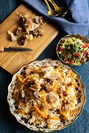
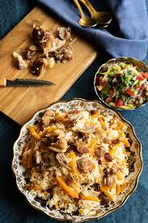

“Taste the Tradition, Savor the Simplicity – Macedonia’s Rice Delight.”
TA cozy corner in the heart of tradition, where every grain of rice tells a story of Macedonian heritage. Indulge in the warmth of home-cooked meals and the charm of local hospitality.


 
